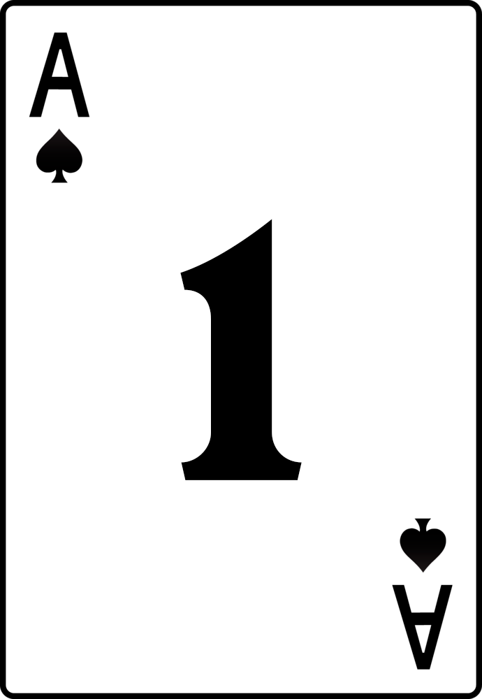
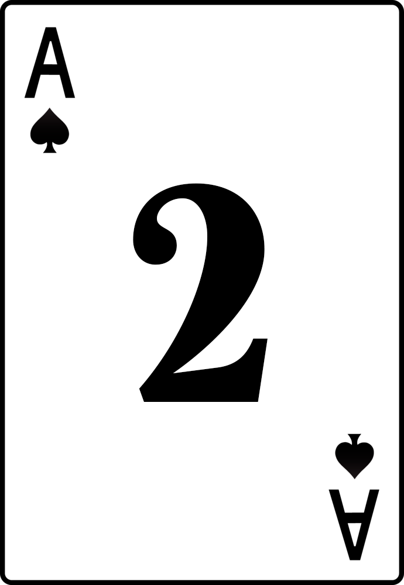
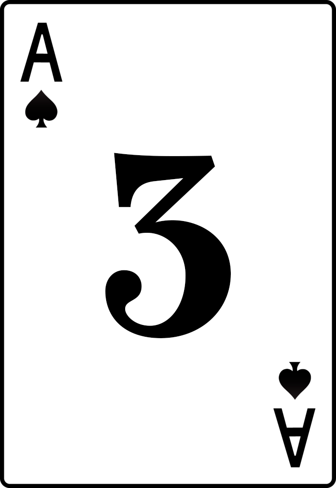
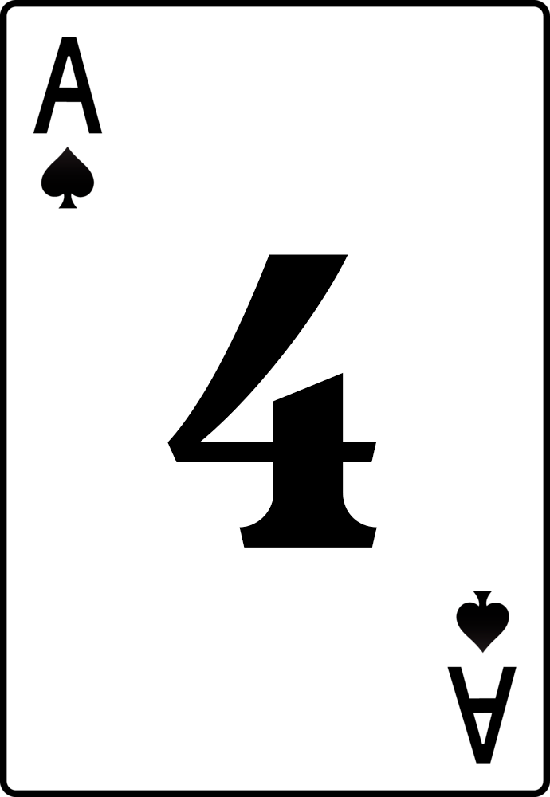
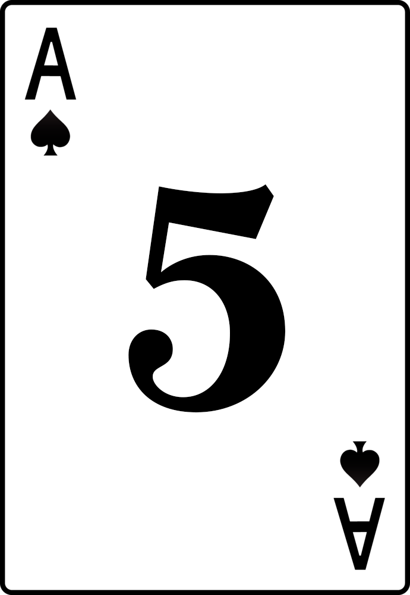

¿Cómo se juega?
Por sorteo se decide quién es el jugador que comenzará teniendo la banca, que será quien reparte. La banca reparte una carta a cada uno de los jugadores, incluyéndose a sí misma.
Conseguir siete y media, es decir, que el valor de todas las cartas del jugador sume siete puntos y medio o bien se acerque el máximo a este valor sin pasarse. La banca juega contra cada uno de los puntos individualmente y su jugada ha de superar o igualar la de cada uno de ellos. En caso de empate, la banca gana.
Indistinto a partir de dos. La única limitación proviene del número de cartas del mazo (40), por lo que se recomienda un máximo de ocho jugadores.
En el juego de las siete y media se utiliza la baraja española de 40 cartas. Como el palo en este juego no tiene importancia, puede también utilizarse cualquier baraja de 40 cartas que tenga 12 figuras y 28 cartas distribuidas en cuatro grupos cuyos valores sean consecutivos del 1 al 7.
Cada una de las figuras valen medio punto. El resto de las cartas tiene el valor representado por su índice, es decir el valor indicado en la carta: el uno o as vale 1 punto; el dos, 2 puntos; el tres, 3 puntos; el cuatro, 4 puntos; el cinco, 5; el seis, 6 puntos, y el siete, 7.
